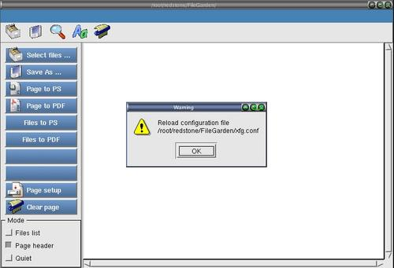

To reload and redraw the menu

Step 2 : Pull down the menu,"File" --> "Reload configurations" to reload the redraw the menu.
Step 6 : A dialog will ask for confirmation.
Step 6 : Click "OK" to close the dialog and redraw the menu.
note : The current directory of the xfgcommander is the current
directory of the saving location for all files saved.They will be highlighted
after you close a dialog or executed a menu command.